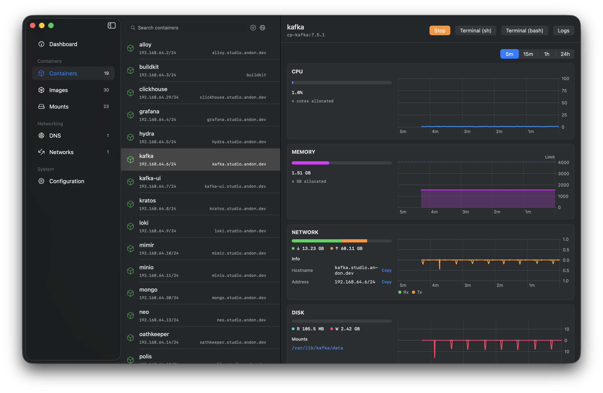
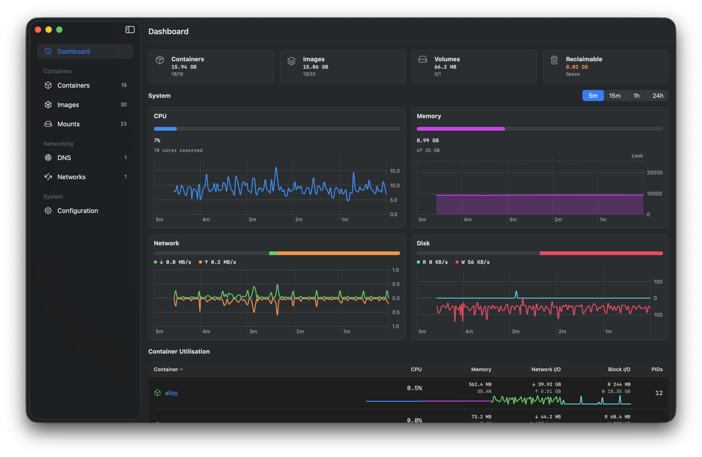
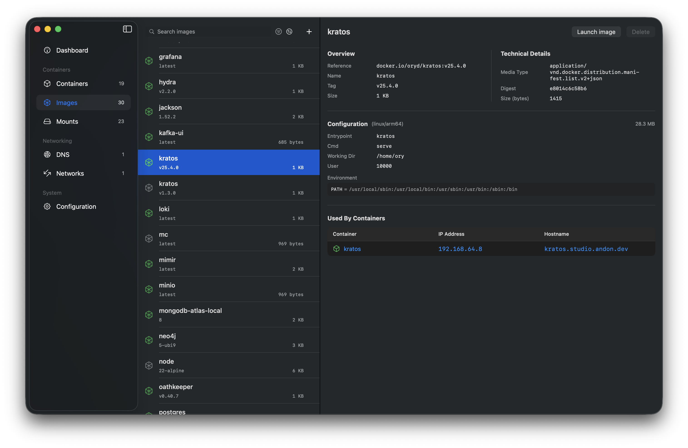
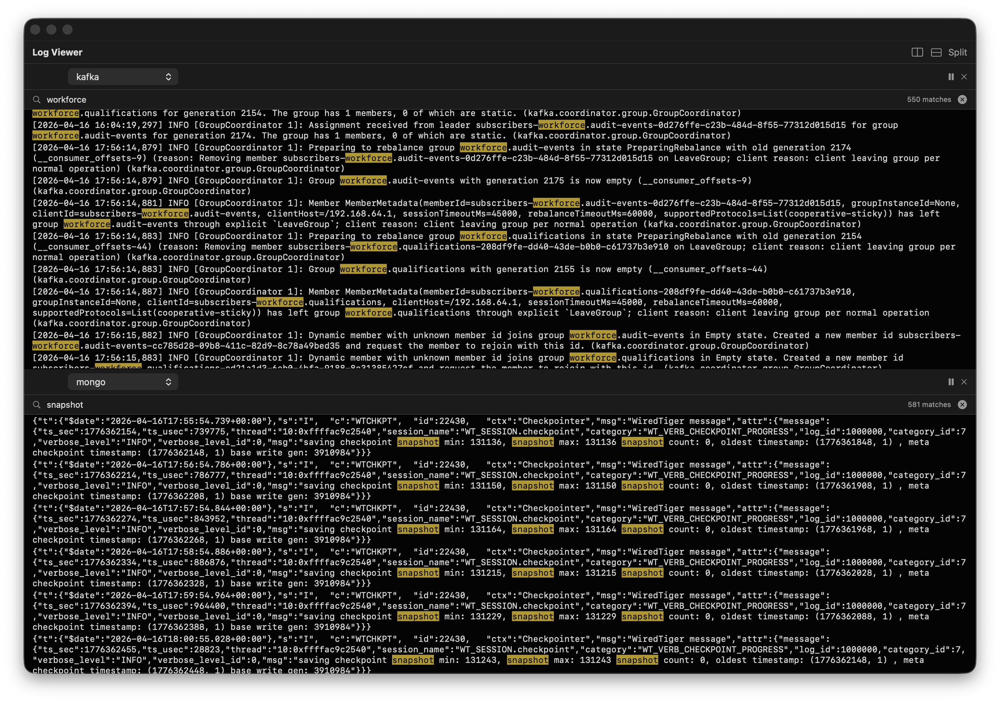
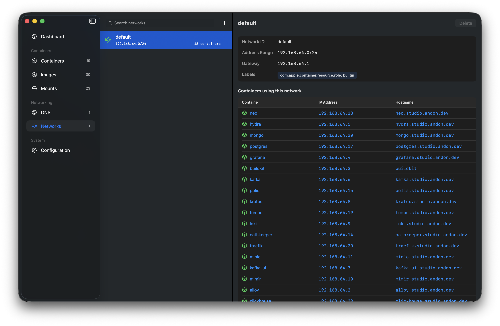
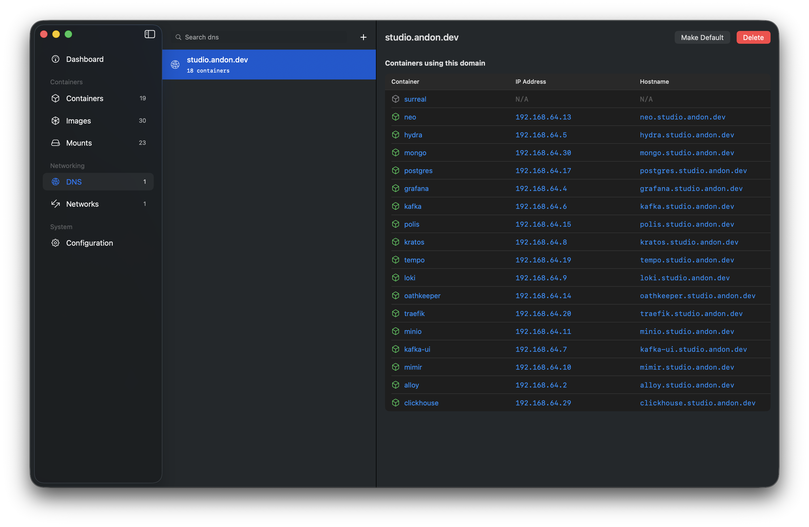
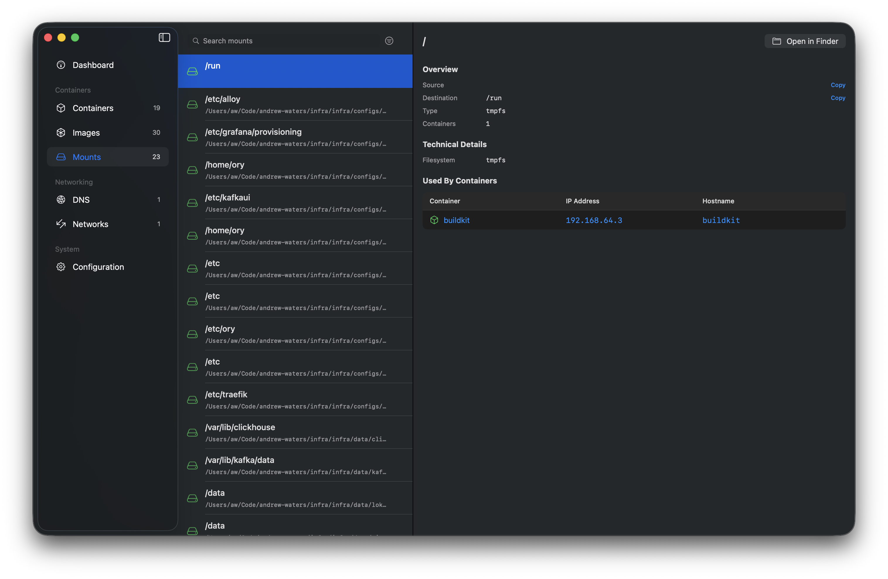
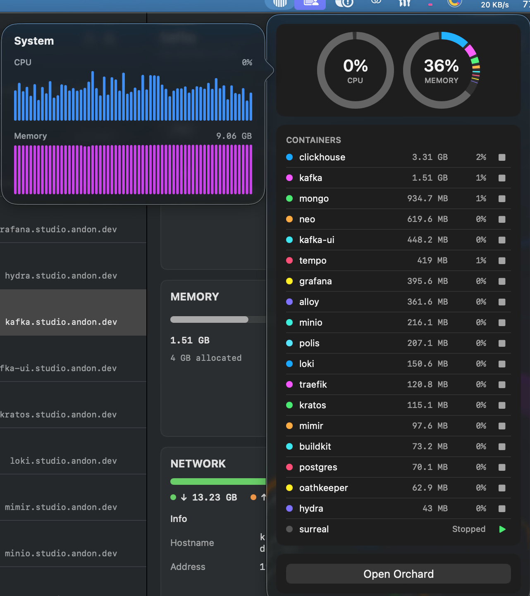

The native GUI for
Apple Containers
Orchard is a native macOS app for managing containers with Apple's container tooling - a fast, focused desktop experience that complements the CLI.
brew install orchard



Everything, without dropping to the CLI
Orchard puts Apple's container tooling behind a first-class Mac interface - signed, notarized, and native Swift.
Container management
Create, start, stop, force-stop and delete containers, with live status and sortable lists.
Image management
Pull, delete and search Docker Hub directly, and run containers straight from an image.
Multi-pane logs
Stream logs from several containers side by side, with split panes, filtering and per-container colour.
Live stats
Watch CPU, memory, disk and network usage in real time, with sortable columns.
Networks & DNS
Manage networks, DNS domains, published ports and hostnames from the app.
Automatic updates
Orchard keeps itself up to date via Sparkle - signed updates delivered in place.
See everything at a glance
A system-wide dashboard sums CPU, memory, network and disk across every container, with headline disk-usage tiles and per-container sparklines.

Search and pull images
Browse Docker Hub, inspect image metadata, and pull without memorising CLI flags.

Debug across services
Split-pane log viewer with text filtering and per-container colour coding keeps multi-service output readable.

Networking without port-mapping
Every container gets its own IP. See addresses and hostnames per network, and create or remove networks from the app.

Friendly DNS domains
Give containers real hostnames. Set the default DNS domain and add or remove domains without root gymnastics.

Track every mount
See which host paths and volumes each container mounts, and jump straight to them in Finder.

Glance from the menu bar
CPU and memory rings across running containers, per-container start/stop controls, and one-click access back to the app.

Install Orchard
Every release is code-signed with a registered Apple Developer ID and notarized by Apple, so it installs cleanly - no Gatekeeper warnings.
Homebrew
brew install orchard
Direct download
Grab the latest .dmg from GitHub Releases and drag Orchard to Applications.
Build from source
Clone the repo and open Orchard.xcodeproj in Xcode - dependencies resolve automatically.
Requires macOS 26 (Tahoe) and Apple Container installed.